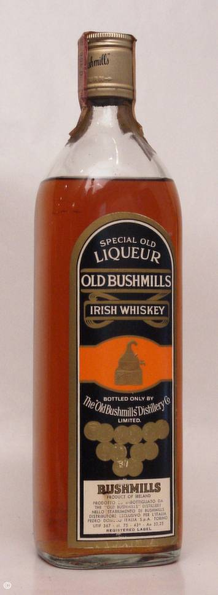

Page 2 of 2
Re: Gilbey's Redbreast

Posted:
Wed Jul 22, 2009 10:59 amby DavidH
IrishWhiskeyChaser wrote:I did find that it had this dull sweetness with the musty PPS character that we talk about with the older Midleton PPS however I also found that there was a kind of orange flavoured children's medicine quality to it too which was not very appealing.
That's a pretty good description of what I had last night. Definitely got that orange syrupy thing and stale, musty aroma. Dull is a good word too. It just didn't sparkle.
Re: Gilbey's Redbreast
Posted:
Wed Jul 22, 2009 1:16 pmby jcskinner
Aye, the ten year old is also billed as a liqueur whiskey. Anyone want to hazard a guess what that might mean in a 1960s context?
Re: Gilbey's Redbreast
Posted:
Wed Jul 22, 2009 2:01 pmby IrishWhiskeyChaser
jcskinner wrote:Aye, the ten year old is also billed as a liqueur whiskey. Anyone want to hazard a guess what that might mean in a 1960s context?
It's just the way it was back then ... nearly all whiskey was labelled as such at one stage.
I have Blackbush Liqueur Whiskey and had a few Jameson Liqueur whiskies and have seen many more labelled as such including Scotch whisky.
SO no fear ... Just whiskey.

- 
- Blackbush Special Old Liqueur WHiskey
- BlackbushOldLiqueur.jpg (45.15 KiB) Viewed 1939 times
Re: Gilbey's Redbreast
Posted:
Wed Jul 22, 2009 2:02 pmby JohnM
It used to just mean an older whiskey, but I'm not sure that this carried into the 1960s.
Re: Gilbey's Redbreast
Posted:
Wed Jul 22, 2009 2:24 pmby jcskinner
That was my understanding, John. I thought it was a vagye designator of age or quality.
Love the pic of the proto-BB, Adrian. I have one of those myself (early Seventies, I think?)
Re: Gilbey's Redbreast
Posted:
Thu Jul 23, 2009 6:52 pmby Michael Foggarty
The Bottle in the Bull and Castle has been open for 2 and half years, i know this becasue i opened it.
The first measure i had out of it was muck and i re tried about 3 weeks ago (hence the fact there is only half a shot left) and its still bloody muck no worse no better, exactly the same as when i opened it. The seal was good on the bottle (the bottle was bought from the shop and we dont buy/sell bottles with huge evaporation). So im looking forward to opening another bottle of it just to see if it was a dud.
Re: Gilbey's Redbreast
Posted:
Thu Jul 23, 2009 9:21 pmby IrishWhiskeyChaser
Obviously some of ye have no appreciation for a good muck so


Probably the story of the last of the stock been used up so maybe closer to the truth.
Re: Gilbey's Redbreast
Posted:
Fri Jul 24, 2009 2:01 amby jcskinner
Well, the society might wish to consider running a Redbreast special night at some point.
Might need to up the entry charge for that one a tad though.
Re: Gilbey's Redbreast
Posted:
Thu Aug 13, 2009 10:31 amby varizoltan
it may be a night for next year
Re: Gilbey's Redbreast
Posted:
Wed Mar 09, 2011 12:55 amby umkw40
I have the same bottle. Gilbey's Redbreast JJ and Sons 10 year. The bottle is in brand new condition, and the whisky inside appears to be very clean (nothing floating around inside). I am wondering what somebody would offer for this unopened bottle.
Re: Gilbey's Redbreast
Posted:
Sun Mar 13, 2011 11:59 amby TheWhiskeyBro
umkw40 wrote:I have the same bottle. Gilbey's Redbreast JJ and Sons 10 year. The bottle is in brand new condition, and the whisky inside appears to be very clean (nothing floating around inside). I am wondering what somebody would offer for this unopened bottle.
Please contact me if your are still interested in selling this bottle, rgds TWB
Re: Gilbey's Redbreast
Posted:
Mon Dec 04, 2017 3:54 amby rlarson3
Well how did it taste?